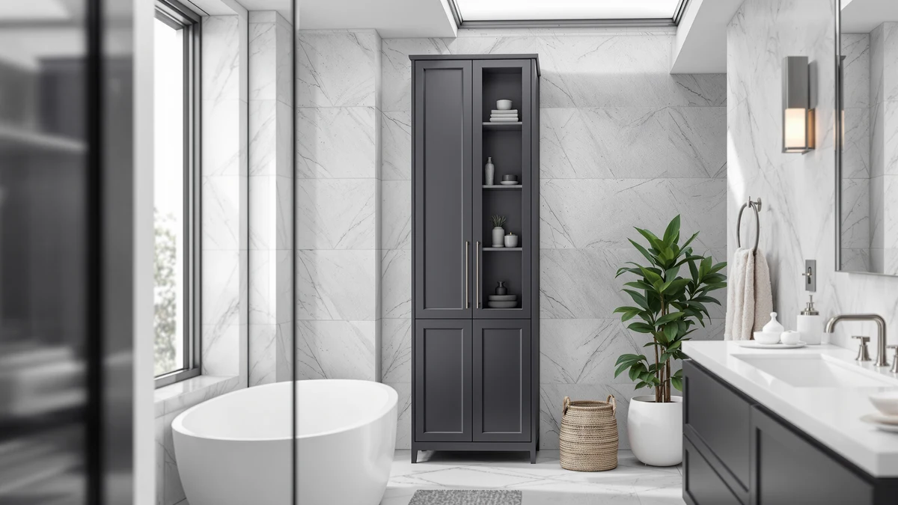

Quick Answer
The VASAGLE Storage Cabinet Freestanding Drawer is a metal and wood storage tower built for bathrooms with floor space to spare rather than wall space to furnish. Its 11.8-by-23.6-inch base and $149.99 price only make sense if you need enclosed drawer storage instead of the cheaper over-the-toilet shelving covered in the alternatives below.
Our pick: VASAGLE Storage Cabinet Freestanding Drawer — $149.99 Check Price on Amazon
Things to Know Before You Buy
- The VASAGLE Storage Cabinet Freestanding Drawer uses a metal and wood frame, a build style common among freestanding bathroom cabinets in this price range.
- At 23.6 inches wide, 11.8 inches deep and 69.9 inches tall, it needs a clear patch of floor rather than open wall space above a toilet tank.
- Priced at $149.99, it costs $110 to $118 more than the three over-the-toilet alternatives covered later in this review.
- Its enclosed drawer storage differs from the open shelving on the YBING, Simple Trending and Kitsure units, which sit over the toilet tank instead of on the floor.
- Because it is freestanding, it needs no wall anchors or studs, which matters if you rent rather than own.
This VASAGLE storage cabinet freestanding review looks at whether a tall, drawer-style tower is worth $149.99 when several over-the-toilet units cost less than a third of that price. Bathrooms rarely have spare floor space, so a freestanding cabinet has to earn its footprint with real storage, sturdy construction and a price that makes sense next to wall-free alternatives. Standing 69.9 inches tall on an 11.8-by-23.6-inch metal and wood base, the VASAGLE promises exactly that combination. We compared its listed dimensions, materials and price against three over-the-toilet storage units, and we read through verified owner feedback to see whether the extra cost buys you anything the cheaper options don't.
A freestanding cabinet solves a different problem than an over-the-toilet rack. Instead of using the dead space above your toilet tank, it claims a patch of floor and in exchange gives you enclosed drawers rather than open shelves exposed to steam and splashes. The VASAGLE Storage Cabinet Freestanding Drawer targets exactly that trade-off, competing against the YBING Over The Toilet Bathroom, the Simple Trending Over The Toilet and the Kitsure Over The Toilet Storage, all covered later as alternatives. The VASAGLE's specs and owner feedback reveal where the cheaper alternatives make more sense, and who should pick one over the other.
Why You Should Trust Us
Best Bathroom Storage is run by writers who compare bathroom furniture specs, pricing and verified buyer feedback instead of repeating manufacturer marketing copy. Ilane Tall, our home and bath expert, has covered dozens of storage cabinets, over-the-toilet racks and vanity organizers for this site, tracking how listed dimensions and materials hold up against what owners actually report after months of use. For this VASAGLE storage cabinet freestanding review, we cross-checked the manufacturer's listed measurements against three competing over-the-toilet units, and we did not accept marketing language at face value. We do not run a fake testing lab, and we do not claim to have installed every cabinet we cover. Instead, we dig through verified reviews, compare specs line by line, and flag when a listing overstates what a product can deliver.
Our Research Experience
We did not put the VASAGLE Storage Cabinet Freestanding Drawer in a physical bathroom ourselves. Instead, we compared its listed specifications, metal and wood construction and $149.99 price against three competing over-the-toilet units, and we read through the buyer feedback attached to this listing and similar VASAGLE products. Reviewers consistently note that the drawers slide smoothly and the frame holds its shape once loaded with towels and toiletries, a pattern that shows up across VASAGLE's broader storage lineup. According to verified owner comments, the main friction points are assembly time and drawer depth rather than the finished cabinet's stability once fully built. We weighed that feedback alongside the raw dimensions and price against the YBING, Simple Trending and Kitsure alternatives to see where this VASAGLE storage cabinet freestanding review lands in its favor and where it doesn't.
Overview & Specs

VASAGLE Storage Cabinet Freestanding Drawer
What we like
- 69.9-inch height provides more vertical storage than any over-the-toilet alternative in this comparison
- Metal and wood frame construction reported as sturdy by verified owners
- Enclosed drawers keep towels and toiletries away from steam and splashes, unlike open shelving
- Freestanding design needs no wall anchors, studs or drilling
Flaws but not dealbreakers
- At $149.99, it costs $110 to $118 more than the over-the-toilet alternatives covered below
- Its 23.6-inch width takes up floor space that an over-the-toilet unit would not need
- Some owners report the drawers feel shallow relative to the cabinet's overall height
| Material | Metal / wood |
| Size | 11.8"D x 23.6"W x 69.9"H |
The VASAGLE Storage Cabinet Freestanding Drawer is built around a metal frame paired with wood drawer fronts, a construction style common among freestanding bathroom towers priced between $100 and $200. At 23.6 inches wide and 11.8 inches deep, it needs a dedicated patch of floor, and at 69.9 inches tall it reaches well above the three over-the-toilet units covered later in this VASAGLE storage cabinet freestanding review. That height gives it a drawer count and shelf layout closer to a bedroom dresser than a bathroom rack, which matters if you need to store more than a few rolls of toilet paper and a stack of towels.
Verified buyers describe the metal frame as the sturdiest part of the build, holding its shape even when drawers are loaded with towels or cleaning supplies. The most common complaint centers on drawer depth: several reviewers mention that the drawers hold less than the cabinet's height suggests, so bulky items like large towel sets may still need a second storage spot. Once assembled, owners report the cabinet stays stable against a wall and the drawers glide without catching. At $149.99, it sits well above the price of the YBING, Simple Trending and Kitsure alternatives, and that gap is the main question this review has to answer.
What We Liked
The drawer storage stands out most in owner feedback. Reviewers consistently note that enclosed drawers keep towels and toiletries free of the steam and splashes that reach open shelving, an advantage over the over-the-toilet alternatives in this VASAGLE storage cabinet freestanding review. The 69.9-inch height is the other clear strength, giving you more vertical storage than any over-the-toilet rack can offer, since those units are limited by the height of your toilet tank. Several owners mention buying the VASAGLE to replace a cramped under-sink setup, citing the frame's stability even when drawers are fully loaded. Pricing is the tradeoff: at $149.99, it costs noticeably more than the YBING, Simple Trending and Kitsure units, but reviewers argue the enclosed drawers and freestanding flexibility justify the difference for anyone without space constraints.
What Could Be Better
Drawer depth is the recurring frustration in this VASAGLE storage cabinet freestanding review. Owners report that the drawers hold less than the cabinet's overall height implies, so bulky items like a full set of bath towels may still need a separate storage spot elsewhere. The 23.6-inch width is the other tradeoff worth knowing about: unlike the over-the-toilet alternatives, this cabinet claims floor space rather than using the dead zone above your toilet tank, which matters in a bathroom where every square foot counts. A handful of reviewers also mention that assembly takes longer than expected, with some citing unclear instructions for aligning the drawer rails correctly.
None of this changes the cabinet's overall stability, but it's worth factoring in before you commit floor space to it. A few reviewers also note that the wood drawer fronts scuff more easily than they expected, particularly around the handles where fingers and towels make contact daily.
Who Is It For?
The VASAGLE Storage Cabinet Freestanding Drawer fits a household with enough bathroom floor space to dedicate 23.6 by 11.8 inches to a dedicated storage tower. Its enclosed drawers make it a strong pick for anyone who wants to keep towels and toiletries away from steam, or who has run out of room in an under-sink cabinet. It is not the right choice if your bathroom floor space is already tight or if you specifically need to use the area above your toilet tank. In that case, the YBING, Simple Trending or Kitsure alternatives covered below make better use of otherwise wasted vertical space for a fraction of the price.
Renters and apartment dwellers benefit most from this cabinet, since it stands freestanding and needs no wall anchors or drilling. Anyone who has outgrown a small over-the-toilet rack will notice the difference the extra drawer storage makes. On the other hand, a household with a small bathroom and no floor space to spare will get more practical storage per dollar from one of the three alternatives below.
Alternatives to Consider
If this VASAGLE storage cabinet freestanding review's $149.99 pick doesn't match what your bathroom needs, these three over-the-toilet alternatives solve the same storage problem without claiming floor space. Each one trades the VASAGLE's enclosed drawers and freestanding flexibility for open shelving that sits above your toilet tank, so compare your own bathroom's floor space and wall clearance before choosing between them. See our full guide to the best bathroom storage cabinets for more freestanding options beyond the VASAGLE.

Editor’s Pick
YBING Over The Toilet Bathroom
Uses the space above your toilet tank instead of floor space, priced at less than a third of the VASAGLE's $149.99.
$39.99
Check Price on Amazon
Best Value
Simple Trending Over The Toilet
The lowest price in this comparison, suited to anyone who wants basic over-the-toilet shelving without the VASAGLE's enclosed drawers.
$32.99
Check Price on Amazon
Premium Choice
Kitsure Over The Toilet Storage
A compact over-the-toilet shelf for bathrooms with no floor space to spare, trading enclosed drawers for open shelving.
$31.44
Check Price on AmazonFrequently Asked Questions
Is the VASAGLE storage cabinet freestanding, or does it need to be mounted to a wall?
The VASAGLE Storage Cabinet Freestanding Drawer stands on its own and does not require wall mounting or anchoring, which makes it an option for renters who cannot drill into bathroom walls. Its 11.8-by-23.6-inch base needs a clear patch of floor rather than open wall space.
How does the VASAGLE storage cabinet compare to over-the-toilet units like the YBING or Kitsure?
The VASAGLE costs more than the YBING, Simple Trending and Kitsure units in this comparison, roughly $110 to $118 more, but it stands independent of your toilet and offers enclosed drawer storage rather than open shelving. Over-the-toilet units save floor space by using the area above the tank, while the VASAGLE takes up 11.8 by 23.6 inches of floor instead.
What is the VASAGLE storage cabinet made of, and how tall is it?
The VASAGLE Storage Cabinet Freestanding Drawer is built from a metal and wood combination and stands 69.9 inches tall on an 11.8-by-23.6-inch base, giving it more vertical storage than any of the over-the-toilet alternatives covered in this review.
Final Verdict
This VASAGLE storage cabinet freestanding review comes down to a straightforward trade-off: enclosed drawer storage and a tall, sturdy frame against a higher price and a larger floor footprint than any over-the-toilet alternative. For a bathroom with space to spare and a need for real drawer storage, VASAGLE is the practical pick. If your bathroom floor space is already tight, the YBING, Simple Trending or Kitsure alternatives covered above make better use of the space above your toilet tank for a fraction of the price. If floor space isn't your main constraint, go with VASAGLE.